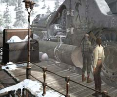
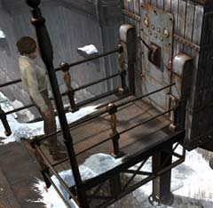
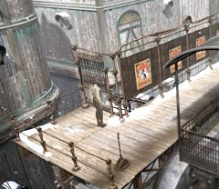

| 概要 | 地図 |
| 淡いヒント集 | ヒント集 | 的確なヒント集 |
| 攻略最短ルート |
| 場所選択に戻る |
ロマンスバーグ(前半)
|
まず始めに
ゼンマイが切れて機関車が止まった町はロマンスバーグである。オスカーはトラブルのにおいがプンプンするといい、大佐は”下は下、上は上”という。どうやら、この町でも何か問題が起きてしまいそうである。 あなたが、まずやらなければならないことは、 ・機関車のゼンマイを巻く ・石炭の装置が動かない原因を探る ・下へ行く方法を探す と、いうことである。

・ゼンマイを巻くことはさほど難しくはない。 ・Syberiaをプレーしたことのある人ならば、造作ないことだろう。 ・初めての人は、駅にある奇妙な装置を調べてみることだ。

・これが石炭の装置である。 ・なぜ動かないのだろうか? ・動いているが、どうして石炭が出ないのだろうか? ・駅で相談できる人間は限られていが、聞かないよりはましだろう。   ・下へ移動するには、この扉を開くしかない。 ・大佐は鍵をなくしたと言っている。では、他を当たるしかない。 ・下との距離はそう遠くない。下にいる人間と情報が交換できればよいだが・・・。
| 次へ >> |
|
| 場所選択に戻る |
| 概要 | 地図 |
| 淡いヒント集 | ヒント集 | 的確なヒント集 |
| 攻略最短ルート |
Syberia II
| 目次へ戻る | ページの上部へ |